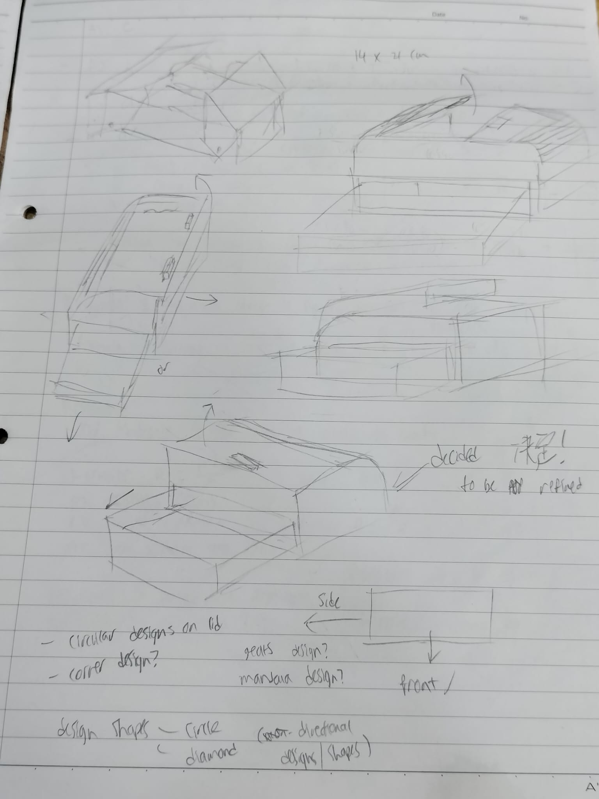
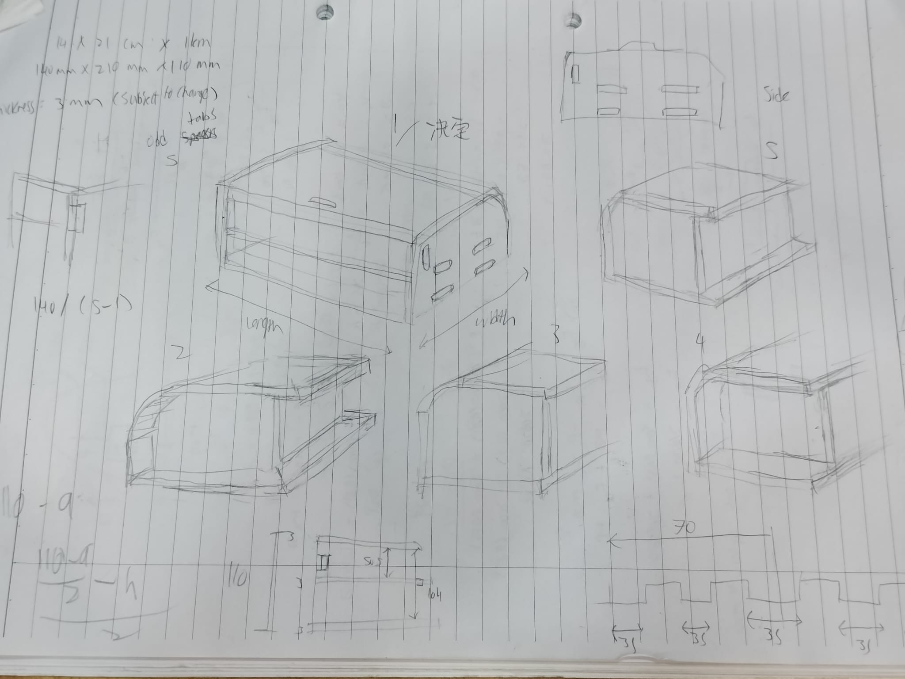
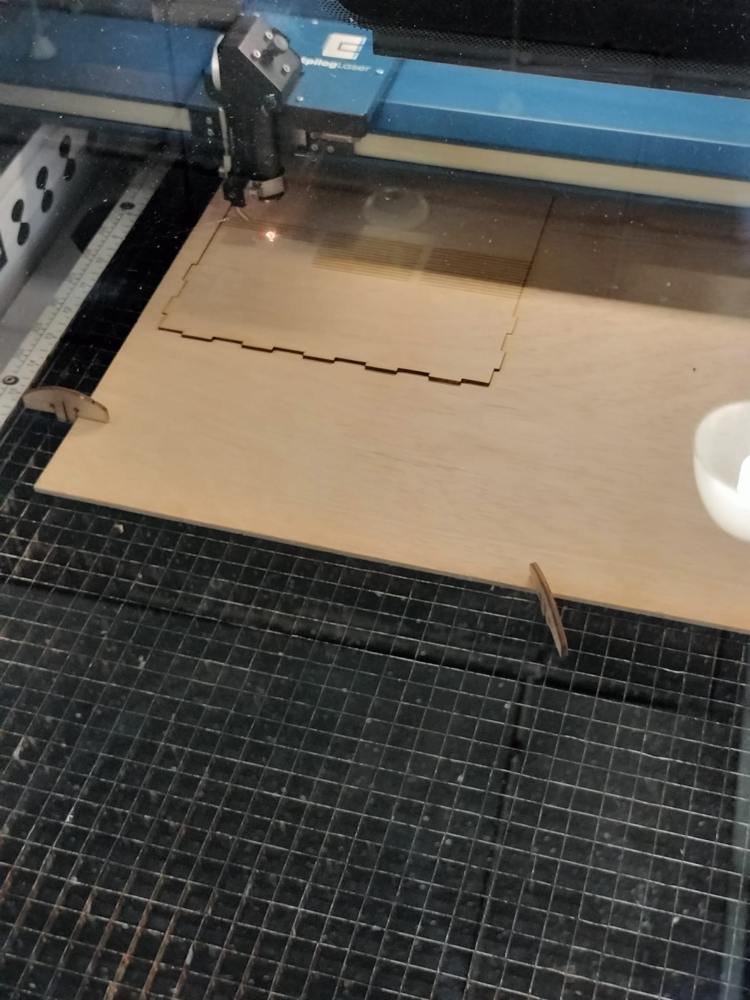
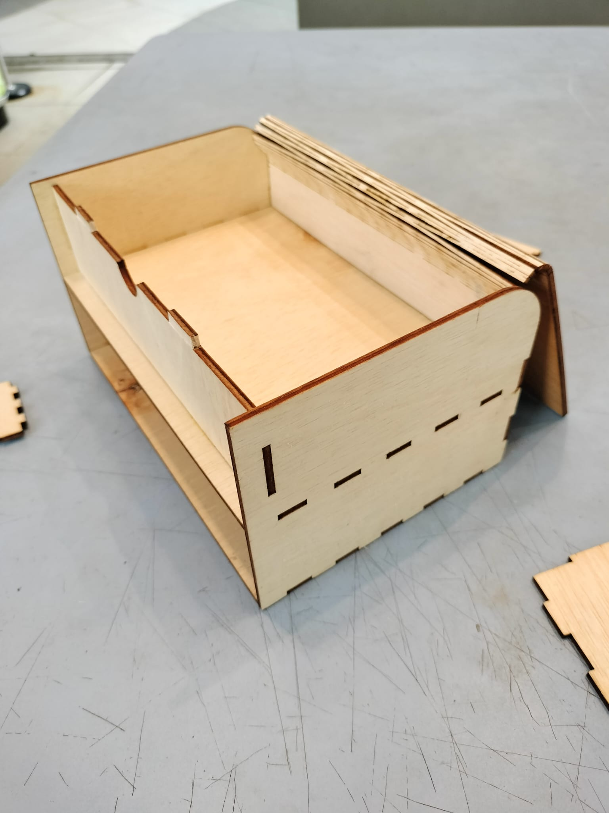
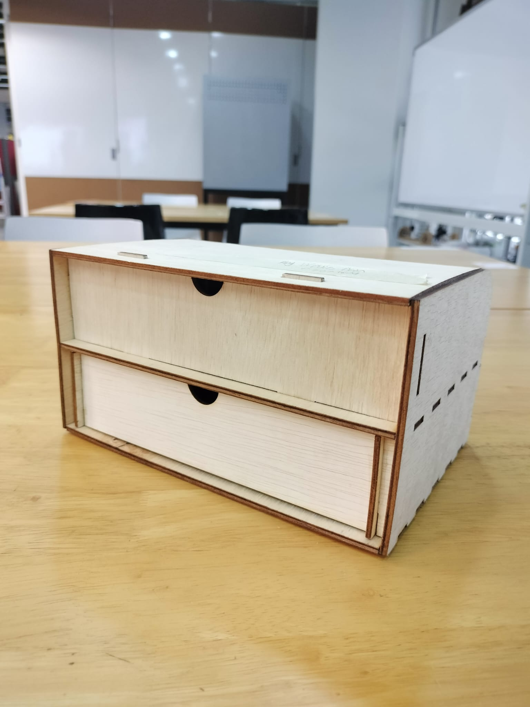
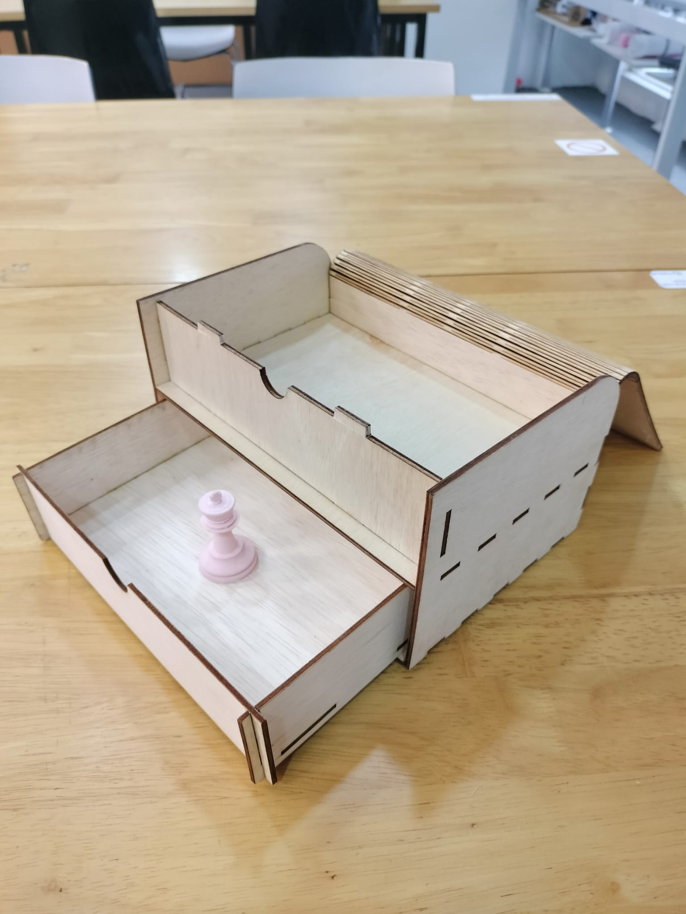

Laser Cutting
- So what is laser cutting? Laser cutting, as its name suggests, utilizes a laser to cut sheets of material into shapes. A variety of materials can be cut, ranging from plyood, acrylic and even certain metals, depending on the machine.
- Laser cutting can not only be used for cutting, but also engraving designs onto the material.
- Creating 3D items from Laser Cutting is possible, but the shape needs to be unfolded and laid out, then assembled after cutting.
Assignment 1
- The assignment for this chapter is to design an accessory box, then laser cut it out and assemble it. The requirements are as shown:
- Must have a movable lid or door
- Must have drawers
- Must be laser cut (wood)
- Drawn and modelled in Fusion 360
- Only minor gluing is allowed on the joints
- No nails, external hinges etc.
- Must be “decorated” in terms of design aesthetic
- Must be completely assembled and no parts falling off
- Measurements for box design to be at least A6 size but no bigger than A5 size
- As always, we are going to start by deciding on the design of the box and doing sketches to get our idea down.
Designing
- To look for ideas, I needed to see what designs that I liked and for that, I went onto Google and Pinterest to research the various designs available.
- We were shown a technique for laser cutting, that being living hinges. Living hinges are hinges cut out directly from the material through a certain pattern of lines. This eliminates the need for external hinges. Of course, multiple hinge designs exist, but this stood out to me and I decided to incorporate this into my design.
- After browsing for a while, I sketched out the box designs that stood out to me, then started to formulate an idea of my own. I then sketched out the rough idea that was forming in my head.
- Then, I started to draw minor variants of the design to see what I liked. Eventually, I managed to refine the idea into what I was going to model.
 Modelling
- Like usual, we are going to model the box in Fusion.
- We are going to use the Component feature to work on each panel of the box separately, creating a new component as we go.
- One other thing we are going to use are User Parameters. This allows us to assign a value to a word, and as we type in the word when inputting dimensions, it automatically defines the value that was assigned. Apart from values, you can also set formulae to calculate certain parts easily without typing the whole formula out in the parameter box. This is a handy feature to use, especially when you need to edit certain values and saves the hassle of going through each individual sketch to edit the values.
- In order for the box to stay together without glue, what we are going to make are called finger joints. The fingers interlock and hold together mainly through friction, though minor amounts of glue is required to truly hold the panels together. We are going to use this in places which require connection.
- Since this is my first time modelling a laser cut item, I took reference from various Youtube videos which were very helpful in acheiving what I wanted. Here are some examples.
Actually modelling the box
- We shall start off by making the side panels. From our draft, the edges are going to interlock with the side and bottom panels. Hence, we are going to draw "pockets" for the fingers of other panels to slot into. We are going to draw only one pocket and extrude cut it. We are then going to use the Rectangular pattern function along with some predetermined parameters to create the rest of the joints. Now that we have our fingers and pockets, this is going to help in making fingers and pockets on other panels. We will touch on that in a bit.
- After modelling the side panel, we can create the bottom panel on a separate component. The panel is a simple rectangle starting from the corner of the side panel with the dimensions of the base of the box, and we are going to extrude it to the thickness of the material. This overlaps with the side panel, but it is going to be important.
- Now, in order to create the fingers and pockets on this panel, we shall use the Combine command. One of the options is "Cut". This allows us to use a component and cut it into an intersecting component. This creates a cutout on the cut component. Using this, we shall select the side panel as the tool body to cut the bottom panel with, then select the bottom panel as the target body. Once done, the bottom panel will now have its own fingers that interlocks with the side panel.
- We are going to need to repeat the process of making the fingers for the other panels.
- To make the other side panel, we are first going to make a mirror plane in the center of the box. We can do this by offsetting the side panel plane by half of the boxes' length. Then, we are going to use the mirror command, select the side panel and mirror plane and click OK. We now have the second side panel, and we can use the same Combine tool as before to cut out the fingers on the other side of the base panel.
- The middle panel is next on the list. But first we are going to make slots on the side panel. Once done, we can offset the base plane up to the level we want the middle panel to be. Then, start a sketch on that plane. Just like the base panel, it is going to be a rectangle starting from the corner. Again, extrude and combine to produce the panel with fingers.
- The remaining panels are pretty straightforward and follows the same few steps as the rest. The tricky one would be the panel with the hinge.
- For the hinged panel, I had to refer to the Youtube video, which does a great job at explaining what to do in order to create the hinge. To put it simply, the "Sheet Metal" and Flange features are used, and you start a sketch on the bent area to create the pattern for the living hinge.
- We are almost done with the model after some tweaks. I am going to model the drawer separately, but now we have to prepare the model to be laser cut. As laser cutting is in 2D, we need to orient all the pieces to be flat on a surface. To do this, we are using this command called "Arrange". What this does is as its name suggests, it arranges parts.
- To arrange the model, we are going to need to first draw a rectangle on the flat plane. Then, using the Arrange command, select every panel and select the rectangle as the "envelope". This will automatically orient the pieces flat within the boundaries of the rectangle.
- At this point, what the tutorial said to do was to create a manufacturing model, but one other tutorial I found was much more convenient. Since laser cutting requires only the boundaries, we are going to start a sketch, then use the Project function to "bring up" the outlines of all the parts. Once done, we are going to take that sketch and save it as a DXF file. This is one of the file formats supported by laser cutters and allows it to cut your pieces out.
Laser cutting and assembly
- Now you're ready to cut. Get the file to the computer connected to the printer, arrange the patterns in the editor and send it to the cutter for cutting.
- The box is now ready for assembly. In my case, when I cut my box, I did not account for a different thickness and wood warping so it had some difficulties fitting. I then had to do some sanding and filing to reduce the thickness of the fingers so they would fit well.
Drawer and final assembly
- For the drawer, it follows the same few steps as before. However, I had to do two diffferent renditions since the first rendition was unstable and did not fit in the hole due to different dimensions. I then redid the entire drawer design then cut it out. Once that was ready, I put it into the box and it's complete!
- Here is the completed box.
 - Although we were supposed to add a design on the box, I was in a rush against time to make this. However, I'm rather pleased and satisfied with the minimalist and clean look of the box.